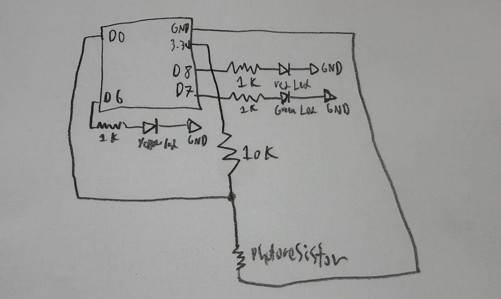

Week 6: Inputs
Capacitive Sensor

water bottle tilt sensor
I created a capacitive sensor that could track tilt. I did this by using a half filled water bottle and attaching two pieces of copper tape opposite each other on the water bottle. I also taped a paper with the angles that I want to use to calibrate the tilt sensor. The device works as water and air have a different capacitance, so the higher the tilt more water will be between the copper plates and water has a higher capactiance than air so the readings would be higher the more tilt there is.

calibration graph
I calibrated the sensor by using the paper and a ruler stuck upright on a table to accruately document down the angle and the matching capacitance. The graph above is the result of my calibration that results in an exponential regression line of best fit. My hypothesis of why this happens is because the higher the tilt the more water is brought between the copper tape, as the increase in water is not linear the capactiance should not be linear either.


water bottle tilt circuit&schematic
This is the circuit that the tilt sensor is connected to through the aligator clips at D4 and A0. The circuit works by reading the capcitance through the water bottle and lights an led based on the capcitance.
long result; //variable for the result of the tx_rx measurement.
int analog_pin = A0;
int tx_pin = D4;
int ledPin = D8;
int ledPin2 = D6;
int ledPin3 = D7;
void setup() {
pinMode(tx_pin, OUTPUT); //Pin 4 provides the voltage step
Serial.begin(9600);
pinMode(ledPin, OUTPUT);
pinMode(ledPin2, OUTPUT);
pinMode(ledPin3, OUTPUT);
}
void loop() {
result = tx_rx();
Serial.println(result);
if (result > 300000) {
digitalWrite(ledPin, HIGH);
digitalWrite(ledPin2, LOW);
digitalWrite(ledPin3, LOW);
} else if (result > 70000) {
digitalWrite(ledPin2, HIGH);
digitalWrite(ledPin, LOW);
digitalWrite(ledPin3, LOW);
} else {
digitalWrite(ledPin3, HIGH);
digitalWrite(ledPin, LOW);
digitalWrite(ledPin2, LOW);
}
}
long tx_rx() { // Function to execute rx_tx algorithm and return a value
// that depends on coupling of two electrodes.
// Value returned is a long integer.
int read_high;
int read_low;
int diff;
long int sum;
int N_samples = 100; // Number of samples to take. Larger number slows it down, but reduces scatter.
sum = 0;
for (int i = 0; i < N_samples; i++) {
digitalWrite(tx_pin, HIGH); // Step the voltage high on conductor 1.
read_high = analogRead(analog_pin); // Measure response of conductor 2.
delayMicroseconds(100); // Delay to reach steady state.
digitalWrite(tx_pin, LOW); // Step the voltage to zero on conductor 1.
read_low = analogRead(analog_pin); // Measure response of conductor 2.
diff = read_high - read_low; // desired answer is the difference between high and low.
sum += diff; // Sums up N_samples of these measurements.
}
return sum;
}
The code works by reading the capactiance that is measured by sending voltage through D4 and reading the response using A0 and turning on red led if the response is greater than 300,000, turning on the led if the response is greater than 70,000 but still less than 300,000, and turning on the green led if the response is less than 70,000.
water bottle tilt sensor in action
Phototransistor
For the second part of the assignment I was tasked with doing something similar to the water bottle tilt sensor but using another input device, I chose to use the phototransistor. The phototransistor works by decreasing or increasing the resistance based on the light it detects.

Phototransistor circuit&schematic
This is the circuit and schematic of the phototransistor sensor that consists of the transistor and 3 leds green, yellow, and red. The led represents different readings of the phototransistor. I did not attatch the phototransistor onto the breadboard so I would be able to take readings that were not affected by the leds. The phototransistor requires a voltage divider to work which is included in the phototransistor circuit which helps reduce the incoming voltage.

calibration graph
I calibrated the photoresistor by measuring the response at different lights, when I shone a flashlight onto the photoresistor it read over 4000, in ambient light it was around 3000, under a table it was around 1100, and finally when I covered the photoresistor with my hand it read around 100.
int lightPin = A0;
int ledPin = D8;
int ledPin2 = D6;
int ledPin3 = D7;
void setup() {
Serial.begin(9600);
pinMode(lightPin, INPUT);
pinMode(ledPin, OUTPUT);
pinMode(ledPin2, OUTPUT);
pinMode(ledPin3, OUTPUT);
}
void loop() {
int result = analogRead(lightPin);
Serial.println(result);
if (result > 4000) { //Red
digitalWrite(ledPin, HIGH);
digitalWrite(ledPin2, LOW);
digitalWrite(ledPin3, LOW);
} else if (result > 3000) { //Yellow
digitalWrite(ledPin2, HIGH);
digitalWrite(ledPin, LOW);
digitalWrite(ledPin3, LOW);
} else { //Green
digitalWrite(ledPin3, HIGH);
digitalWrite(ledPin, LOW);
digitalWrite(ledPin2, LOW);
}
}
The code works by first reading the analog signal that is comes in through A0 and turns on an led based on that reading. If the reading is greater than 4000 the red led would light up, greater than 3000 but less than 4000 would light up the yellow led, and less than 3000 would light up the green led. The values are determined in my calibration graph so that 4000 would be flash, 3000 would be ambient light, and less than 3000 would be under the table.
CNC assignment
For the CNC assignment I have decided to create a PCB for my final project as I recently learned how to design PCBs in a lab Victor recently taught in. I will design my PCB using Ki-Cad.